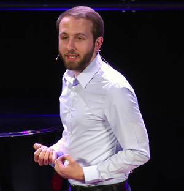

Florian's Short-Bio

I'm all about using digital innovations to tackle difficult problems.
My previous organization, Kiron, offers university level eLearning for refugees in Germany and around the world to help them get into university.
Before that, I conceptualized and programmed a web based corruption complaints system for the German Development Agency (GIZ) in Nairobi, currently operational at over 10 offices around Kenya.
MA in Development Studies (Cambridge), BA in Social Sciences (Maastricht, Singapore).
Come over for a chat if you're into
e-learning, fancy
big history, wonder how to achieve
empowerment of the bottom billion
or want to push yourself to get good at
react.js.
My github page is here:
esuus.github.com (you'll find stuff there eventually.)
Oh, and find
me on linkedin